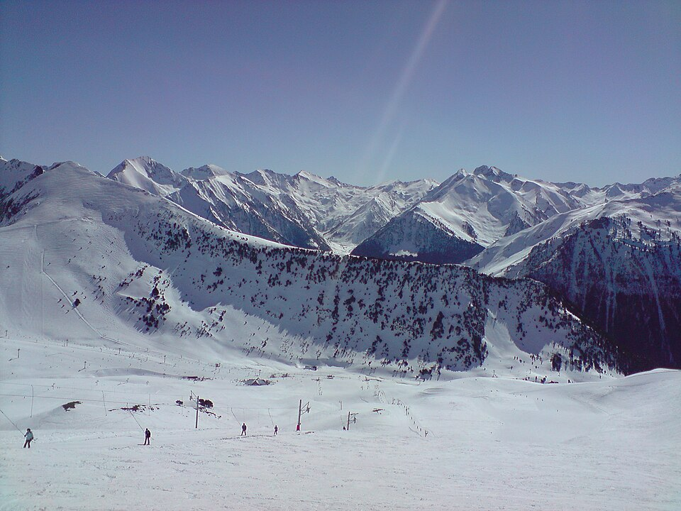

Saint-Lary
Valle de Aure · Altos Pirineos
- Pistas
- 49 km
- 104 trazados
- Cota máxima
- 2339 m
- mínima 1596 m
- Desnivel
- 743 m
- esquiable
- Remontes
- 19
- 1 telecab. · 7 telesillas
Estación del Valle de Aure, muy frecuentada desde Aragón por el túnel de Bielsa. Tres sectores: Pla d’Adet, Espiaube y Saint-Lary 2400.
Foto: Guillaume336 · Public domain · Wikimedia Commons

Hoy
Saint-Lary ahora mismo
Estado de pistas y remontes según el último parte publicado, y las webcams de la estación.
Webcams
Estado y webcams de Infonieve.es, a partir de los partes y cámaras de cada estación. Antes de salir, confírmalo en la web oficial o en su parte de nieve.
Próximos 7 días
Nieve y tiempo previstos
Previsión para la cota alta (2339 m) y la base (1596 m).
Previsión de modelos meteorológicos de Open-Meteo (CC BY 4.0). Es previsión, no observación: lo que hay abierto hoy está en el estado de pistas.
Plano
Plano de pistas
Pasa el cursor o toca una pista o un remonte para ver su nombre, longitud y desnivel.
Trazados: © colaboradores de OpenStreetMap (ODbL), datos del 10 de agosto de 2026. No es el plano oficial de la estación ni refleja aperturas.
Pistas
104 pistas, 49 km
La más larga con nombre es Balcon Mouscades 3 (1,6 km, azul).
VerdeMuy fácil
12 pistas · 3,2 km
Ver nombres
- Echarpe 0,6 km
- Chemin du Garlitz 0,5 km
- Gentianes 0,4 km
- Echarpe 0,3 km
- Baby 0,3 km
- Gentianes 0,3 km
- Echarpe 0,1 km
- Echarpe 0,1 km
AzulFácil
58 pistas · 26,3 km
Ver nombres
- Balcon Mouscades 3 1,6 km
- Corniche II 1,4 km
- Tortes 1,4 km
- Combe Saboures 1,3 km
- Balcon du Lita 1,2 km
- Balcon Mouscades 2 1 km
- Soum de matte 0,9 km
- Ours 0,9 km
- Arrouyes 0,9 km
- Balcon de Cabanne 0,8 km
- Cabane 0,8 km
- Marmottes 0,8 km
- Balcon du Lita 0,7 km
- Mickeys 0,7 km
- Escalette 0,7 km
- Tortes 0,6 km
- Garlitz 0,6 km
- Tétras 0,6 km
- Palombes 0,5 km
- Corniche I 0,5 km
- Bouleaux 0,5 km
- Balcon Mouscades 1 0,5 km
- Tortes 0,4 km
- Bouleaux 0,4 km
- Col 0,3 km
- Ludette 0,3 km
- Corniche I 0,3 km
- Desman 0,3 km
- Balcon Mouscades 1 0,2 km
- Desman 0,2 km
- Balcon Mouscades 1 0,2 km
- Bouleaux 0,2 km
- Balcon Mouscades 3 0,2 km
- Escalette 0,2 km
- Bouleaux 0,2 km
- Corniche I 0,2 km
- Escalette 0,2 km
- Corniche I 0,2 km
- Corniche II 0,1 km
- Escalette 0,1 km
- Balcon Mouscades 1 0,1 km
- Balcon Mouscades 0,1 km
- Balcon du Lita 0,1 km
- Balcon Mouscades 2 0,1 km
- Tortes 0,1 km
- Balcon Mouscades 1 0,1 km
- Desman 0,1 km
- Peyramède 0,1 km
- Peyramède 0,1 km
- Balcon Mouscades 0 km
RojaIntermedia
20 pistas · 10,9 km
Ver nombres
- François Vignole 1,4 km
- Mirabelle II 1,2 km
- Isard 1,2 km
- Forêt 1 km
- Rhodos 1 km
- Corneblanque 0,9 km
- Mirabelle I 0,7 km
- Violette 0,7 km
- Sorbiers 0,6 km
- Mur merlans 0,4 km
- Isard 0,4 km
- Isard 0,2 km
- Isard 0,2 km
- Mirabelle 0,2 km
- L'Oule 0,1 km
- Bastan 0,1 km
- Mirabelle 0,1 km
NegraDifícil
11 pistas · 8,1 km
Ver nombres
- Terranère 1,4 km
- Bassia 1 km
- Arbizon 1 1 km
- Adret 1 km
- Lagopède 0,8 km
- Sarrats 0,8 km
- Oussadet 0,5 km
- Carrots 0,5 km
- Arbizon 3 0,5 km
- Le Couloir 0,4 km
- Arbizon 0,1 km
Sin clasificarSin dificultad en los datos
3 pistas · 0,4 km
Remontes
19 remontes
El de mayor desnivel: Espiaube, 720 m.
| Remonte | Tipo | Longitud | Desnivel | Llegada |
|---|---|---|---|---|
| Espiaube | Telecabina | 1697 m | 720 m | 2317 m |
| Bouleaux | Telesilla | 1820 m | 602 m | 2212 m |
| Foret | Telesilla | 1395 m | 599 m | 2196 m |
| Soum de Matte | Telesilla | 1232 m | 414 m | 2055 m |
| Lita | Telesilla | 716 m | 356 m | 2103 m |
| Tourette | Telesilla | 1345 m | 289 m | 2318 m |
| Isards | Telesquí | 658 m | 286 m | 2338 m |
| Adet | Telesilla | 664 m | 182 m | 1825 m |
| Saboures | Telesilla | 1187 m | 179 m | 2218 m |
| Garlitz | Telesquí | 591 m | 173 m | 1894 m |
| Col | Telesquí | 350 m | 78 m | 2288 m |
| Gentianes | Telesquí | 322 m | 63 m | 2095 m |
| Ludette | Telesquí | 305 m | 59 m | 1717 m |
| Baby Merlans | Telesquí | 312 m | 34 m | 2064 m |
| Kid Park | Cinta | 136 m | 14 m | 1684 m |
| Isards | Telesquí | 97 m | 12 m | 2052 m |
| École | Cinta | 127 m | 9 m | 1687 m |
| ESF 2 | Cinta | 63 m | 3 m | 1691 m |
| Jardin d'Enfants | Cinta | 19 m | 2 m | 1691 m |
Longitud en planta y desnivel sobre el modelo de relieve. No incluye horarios ni estado de apertura.
Guía práctica
Antes de ir a Saint-Lary
Cómo llegar
Valle de Aure, Altos Pirineos (Francia). Coordenadas del dominio: 42,8224, 0,2577.
Ver en OpenStreetMap · Cómo llegar en coche
En invierno comprueba el estado de la carretera y si hacen falta cadenas.
El terreno
- Pène Male, 2582 m
- Pic d'Arrouye, 2566 m
- Pic cabanou, 2527 m
- Soum de Matte, 2377 m
- Núcleos: Pla d'Adet, Espiaube, Soulan
Enlaces oficiales
Forfaits, horarios y aperturas cambian durante la temporada: los publica la estación.
Para parar en pistas
- Les Merlans
- Les Trois Guides
- Art Bison
- Ô Chalet
- Les 3 Guides
- La Sandwicherie
Restaurantes y cafeterías con nombre en OpenStreetMap. Sin horarios.
Saint-Lary sin cobertura
La app para Android guarda los mapas en el móvil y te ayuda a encontrarte con tu grupo.
Más en Pirineo francés
Pirineo francés · Pirineos Orientales
Font-Romeu Pyrénées 2000
- Pistas
- 36 km
- Cotas
- 1716–2212 m
- Remontes
- 24